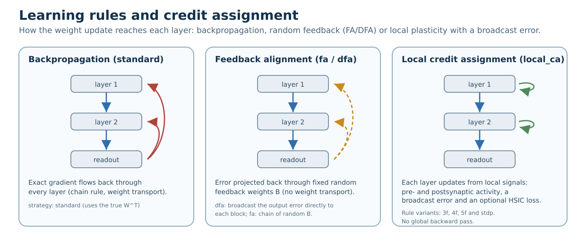

Training
dendritic-train config.yaml trains the model that a configuration file
describes. One trainer updates the encoder (when it has trainable
parameters), the core network and the decoder together; there is no separate
encoder phase. training.main.strategy selects how the trainer computes the
weight updates: backpropagation, a feedback-alignment rule, local learning
rules, a warm-up or layer-wise schedule, or a sequence of stages. Every
training option lives under training.main:
training:
main:
strategy: standard # how the updates are computed (see "Training strategies")
common: # the training loop: epochs, batches, loss, clipping, checkpoints
epochs: 100
batch_size: 256
loss_function: ce
param_groups: # learning rate of each parameter group
lr: 0.01
optimizer: # optimizer and its hyperparameters
name: adam
regularization: {} # auxiliary L1/L2 and E/I weight-ratio penalties
pruning: {} # magnitude pruning after training
strategies: {} # one options block per strategy that has options
learning_strategy_config: null # local learning rules (local_ca and multi_stage)
The former training.encoder section is ignored with a warning. Training on
several GPUs is described in Distributed training; the run directory
and the files a run writes are described in Run directory layout.
Training loop options
training.main.common holds the options of the training loop that every
strategy shares; the annotated reference configuration
(Annotated reference configurations) shows them in context.
Option |
Default |
Meaning |
|---|---|---|
|
|
Training epochs. Strategies with several phases add their own phase epochs (see their sections). |
|
|
Samples per optimizer step, per process. |
|
|
Reshuffle the training set every epoch (seeded by the loader seed). |
|
|
Registered loss name (Loss functions). |
|
|
Gradient clipping (Gradient clipping and non-finite gradients). |
|
|
Stop when the validation loss has not improved for |
|
|
Which weights the run ends with and when the best checkpoint is written (Best state and checkpoints). |
|
|
Learning-rate schedule (Learning-rate schedule). |
|
|
Automatic mixed precision with a gradient scaler. It takes effect only on CUDA devices; without CUDA the trainer logs a warning and trains in full precision. |
|
|
Set non-finite gradient entries to zero before clipping and the optimizer step. |
|
|
Log how long each epoch waits for data. |
|
|
Record decoder-input, logit and gradient statistics of the first optimizer step. Only the FSDP trainer reads it; every other trainer raises when it is true. |
|
|
Loss-curve plots, and the per-epoch progress log every
|
|
|
DataLoader worker processes. |
|
|
Pin host batches; |
|
|
Keep workers between epochs ( |
|
|
Deliver worker batches in sampler order. |
|
|
Batches used by data-driven gate initialization before training (Gate initialization and maintenance). |
|
|
How the reactivation gates change during training: by the optimizer
( |
|
|
Maintenance of sparse synapse banks before every optimizer step
(Sparse synapse maintenance and rewiring). The former name
|
|
Learning rate of each parameter group. |
|
|
|
Cellwise impact rewiring of |
The command line overrides several of these options before the
configuration is validated: --epochs, --lr, --topk_lr,
--blocklinear_lr, --reactivation_lr, --decoder_lr,
--learning_strategy, --seed and others (Command-line reference).
batch_size is per process: with W DDP or FSDP processes one optimizer
step sees W * batch_size samples and the learning rate is not rescaled
(Distributed training).
Parameter groups and learning rates
The optimizer receives the model’s parameters in groups, each with its own
learning rate, set under training.main.common.param_groups:
Option |
Default |
Parameters it sets |
|---|---|---|
|
|
Use the component groups below. |
|
|
Group |
|
|
Group |
|
|
Group |
|
|
Group |
|
|
Group |
|
|
Group |
|
|
Group |
With the default split_params: true, lr does not reach the sparse
synapses, the branch couplings, the gates or the decoder. A sweep or a
command-line override of lr alone can therefore leave most of a dendritic
model’s training unchanged; change topk_lr and the other component rates
(--topk_lr, --blocklinear_lr, --reactivation_lr,
--decoder_lr) instead. Single-process, DDP and FSDP training build the
optimizer from these same groups, and training.main.regularization
can penalize them by name (Regularization and pruning).
Optimizer
training.main.optimizer.name selects the optimizer:
Name |
Optimizer and the fields it reads |
|---|---|
|
|
|
|
|
|
|
|
|
Muon updates for matrix parameters (momentum and Newton-Schulz
orthogonalization), each matrix projected back onto the sphere of its
initial Frobenius norm; every other parameter uses AdamW with
|
training.main.optimizer must be a mapping (optimizer: {name: adamw},
not optimizer: adamw). Every parameter group carries its own learning
rate, so optimizer.lr is only the optimizer’s unused default: a value other
than 0.001 must equal param_groups.lr, and training raises otherwise.
Set learning rates under param_groups. A misspelled optimizer name loads
and fails when the optimizer is built (dendritic-train --validate-only
builds it). dendritic_modeling.training.optimizers.register_optimizer
adds an optimizer (Extension registries).
Learning-rate schedule
lr_schedule: none (default) keeps every group’s learning rate. With
lr_schedule: cosine the scheduler steps once after each training epoch
and multiplies every group’s rate in epoch \(e\) (counted from 0) by
where \(W\) is lr_warmup_epochs and \(E\) is epochs. A
positive lr_warmup_epochs without cosine raises, because the warm-up
is part of the cosine schedule. standard, recurrent, fa, dfa
and soma_dfa apply this schedule. presentation_stream schedules per
optimizer step instead (Presentation streams). The other
strategies run separate phases or their own optimizer steps, so they raise
ValueError for any schedule other than none: local_ca,
voltage_stabilization, homeostatic_control, ei_equilibrium,
freeze_layers, freeze_branches, freeze_branch_kl, multi_stage
and the FSDP trainer.
Gradient clipping and non-finite gradients
grad_clip_mode: value clamps every gradient element to
[-grad_clip_value, grad_clip_value]; grad_clip_mode: norm rescales all
gradients together so that their global L2 norm is at most
grad_clip_value. grad_clip_value: 0 or null disables clipping.
When the mode is unset, recurrent and the FSDP trainer clip the norm and
every other strategy clips by value; config.json records the resolved
mode. The former enable_adaptive_clipping: true loads as
grad_clip_mode: norm with a deprecation warning. local_ca clips its
local-rule gradients by value with
learning_strategy_config.clip_grad_value; a different common
grad_clip_value or grad_clip_mode: norm raises.
enable_nan_checking: true sets NaN and infinite gradient entries to zero
before clipping and the optimizer step, after AMP unscaling, so the gradient
scaler still skips an overflowing step and lowers its scale.
use_amp, enable_nan_checking and profile_dataloader act inside the
training step. A strategy whose own loop does not implement one of them raises
ValueError when it is true:
Strategy |
Step options it does not apply |
|---|---|
|
|
|
|
|
|
Gradient-scaling hooks (the gradient_scaling options of the sparse
synapses, branch couplings and gates; Sparse synapse types) act on
autograd gradients. fa, dfa and local_ca assign gradients
directly and raise when a gradient_scaling option is not none;
soma_dfa backpropagates inside each neuron and applies them.
Loss functions
training.main.common.loss_function names a registered loss. Names are
matched exactly, then case-insensitively; an unknown name fails when the
trainer is built. ce, bce and cat_nll are defined for
model.task: classification only; a trainer that applies the configured
loss raises when one of them is combined with another task (recurrent
applies its own task loss, described below the table).
Name |
Alias |
Loss |
|---|---|---|
|
|
Cross-entropy of class logits and integer labels. |
|
|
Negative log-likelihood of a categorical distribution with the outputs as logits. |
|
|
Binary cross-entropy of probabilities ( |
|
|
Mean squared error. |
|
|
Logarithm of the mean squared error. |
|
|
Negative cosine similarity of outputs and targets along the last dimension. |
|
|
\(\log(1 + \text{neg\_cos\_sim})\), which keeps a gradient near perfect similarity. |
|
|
Reconstruction error plus the KL divergence of the latent distribution; the model must be a variational autoencoder. |
|
|
Sequence loss: cross-entropy over the time axis for one event time.
Outputs |
|
|
Sequence loss: balanced binary-logit loss of two output heads,
|
The recurrent strategy trains classification with cross-entropy and
regression with mean squared error. It accepts ce/cross_entropy
(classification), mse/mean_squared_error (regression) or one of the two
sequence losses, which it applies to whole sequences; other names raise. The
FSDP trainer evaluates the loss on precomputed outputs, so the losses that
need the model itself (neg_cos_sim, log_adj_neg_cos_sim,
vae_elbo) and the sequence losses raise there.
dendritic_modeling.training.loss.register_loss_function adds a loss
(Extension registries).
Best state and checkpoints
With load_best_state_dict: true (default) training ends on the weights of
the epoch with the lowest validation loss. Epochs whose validation loss is
not finite are never selected, and a run in which no epoch had a finite
validation loss raises instead of restoring the untrained weights;
load_best_state_dict: false keeps the final weights.
best_state_device: cpu keeps the best-epoch copy in host memory instead of
on the model’s device. save_best_checkpoint writes the best weights to
<prefix>best_model.pt on every improvement (every_improvement), once
at the end of the phase (end) or not at all (never). The trainer
writes into the run’s main_network/ directory, and <prefix> names the
strategy or phase, for example standard_best_model.pt.
experiment.checkpointing.enabled: true adds periodic checkpoints: the
model weights every save_every_n_epochs epochs (default 10) in
main_network/<prefix>checkpoints/epoch_<N>.pt, where N counts epochs
from 1 and epoch_0.pt holds the weights before the first epoch. At the end
of a run final_model.pt in the run directory holds the final weights; when
they are those of the single best checkpoint it is a hard link to that file.
The FSDP trainer writes its own checkpoints (Distributed training).
Every checkpoint the trainers write goes through
networks.checkpoints.atomic_torch_save: the file is written next to its
destination, flushed to disk and renamed over it, so an interrupted save keeps
the previous file, and its mode follows the umask. Multi-stage checkpoints
store their stage configuration and results as plain containers and load with
PyTorch’s weights-only loader.
Checkpoint versions
A module whose saved state gained entries records a version in the state
dict’s _metadata, and networks/state_versions.py lists the entries
each version added. Loading follows one rule:
A file of the current version that lacks such an entry fails strict loading, like any other missing key.
A file that predates the entry keeps the module’s constructed value, with a warning. The loaders (
load_initial_model_checkpoint, checkpoint analysis and Poisson transfer) return these entries underlegacy_state.A state dict rebuilt without its
_metadatacounts as predating every version, so code that rebuilds state dicts should carry the metadata over (networks.checkpoints.copy_state_metadata).networks.state_versions.compare_state_dict_keyscompares a file with a model and lists entries of a newer version separately (version_added) from missing and unexpected keys.
The versioned entries are:
DendriticBranchLayerversion 2: the analytical calibration priorsreactivation_analytical_init_mandreactivation_analytical_init_b(float64) and the additive tangent anchors. For the tangent anchors, an operating point the module already has from its configuration takes precedence over a file that recorded none.Parametric activations version 2:
fixed_b_buffer.Indexed synapse layers version 2: the allowed-connection mask of the rewiring layers (
indexed_rewire,indexed_release). A kept mask is reported with the number of loaded contacts it disallows.DeepST version 2: the rewiring counter
rewire_step.indexed_releaseversion 2: contact ages count optimizer steps. A version-1 file records alegacy_statenote because its ages counted training forward passes; the two agree when every optimizer step runs one training forward pass.
A library version that predates an entry rejects files that contain it as unexpected keys under strict loading.
Sparse synapse maintenance and rewiring
The trainers wrap the optimizer in CustomWeightDecayOptimizer. Before
each update it decays the selected sparse weights with their parameter
group’s current learning rate; after the update it advances rewiring and any
configured topology controllers. Three separate settings shrink weights:
Setting |
Default |
Effect |
|---|---|---|
|
|
Multiplies the active weights of sparse synapse banks by
|
|
|
The optimizer’s own weight decay (L2 for Adam, decoupled for AdamW). |
|
|
An L2 penalty added to the loss. |
weight_boosting: truemultiplies eligible unselected candidate weights by1 + lr * synapse_decay_rate; it needs a positivesynapse_decay_rate. Forbidden inputs and entries excluded by a connection mask are never boosted.Dense Top-K banks with a deterministic selection (
topkwithout selection noise) decay the synapses that their training forward pass selected in the same step instead of selecting again; decay runs before the optimizer update, so the selection is the same. A bank whosepre_wchanged after that forward pass (an in-place update, a state load or a device move) selects again. Stochastic, variance and dense-to-sparse selection always select again.Fixed-index layers (
indexed,indexed_rewire,indexed_release) store only active contacts. Their weights decay; they have no unselected candidates to boost.Maintenance reaches sparse leaves in the encoder, core and decoder once per optimizer step. Frozen weights and parameters outside the stepping optimizer’s groups are excluded.
DeepST and indexed-rewire layers count optimizer steps in their
rewire_stepbuffer and rewire everyrewire_frequencysteps. DeepST with signed weights prunes by magnitude and regrows at+weight_threshold.credit_deepstneeds recorded local-learning credit aftercredit_warmup_steps: use it withlocal_ca, or selectdeepstfor backpropagation. New candidates stay in the pool until they have been observedcredit_min_observationstimes; at each event, mature candidates that were not swapped in are replaced by new random ones.Dense-to-sparse layers with
advance_on_forward: truekeep one mask per recurrent unroll and advance the schedule once it completes. Withadvance_on_forward: falsethe optimizer-step hook advances it.Indexed-release contact ages count optimizer steps. Cellwise impact rewiring replaces at most
floor(n_eligible * eligible_fraction)contacts per cell andfloor(K * segment_fraction)per segment.
Selection noise and stochastic Top-K selection apply in training mode. Evaluation uses deterministic selection, and signed weights are ranked by magnitude. The VAE encoder samples during training and returns its latent mean in evaluation mode.
Indexed-rewire and indexed-release checkpoints keep their allowed-connection
masks, and indexed-rewire also records its resolved random seed and step
counter. A rewired contact keeps the weight of the contact it replaces; the
new inputs are drawn from the layer’s rewiring seed, not from the training
random stream, and every DDP rank reads the same synchronized seed buffer. Deep copies keep gradient-scaling hooks. A model can be deep-copied or
pickled after a training forward: the tensors that modules keep from their
last forward pass for analyses (population outputs, routing information,
branch currents and diagnostics) are copied without their autograd graph,
and the original keeps them unchanged, so the copy trains on exactly as the
original does. Calling train() after
freeze_for_inference() restores the saved trainability flags of the
parameters. Sparse synapse types describes the synapse families and their
options.
Training strategies


How the weight update reaches each layer: backpropagation (standard)
sends the exact gradient back through every layer; feedback alignment
(fa, dfa) sends the error through fixed random matrices instead of
the transposed weights; local credit assignment (local_ca) combines
local presynaptic and postsynaptic activity with a broadcast error, with no
global backward pass.
training.main.strategy takes one of these values. Strategies with options
read them from training.main.strategies.<name>; local_ca reads
training.main.learning_strategy_config instead. strategies.standard
takes no options, and a block for fa, dfa or soma_dfa raises.
Strategy |
What it does |
Options block and use |
|---|---|---|
|
Backpropagation, with optional regularization, pruning, AMP and the cosine schedule. |
None. The default for feedforward models. |
|
Backpropagation through time on |
|
|
Feedback alignment and direct feedback alignment: fixed random feedback matrices replace the transposed weights; each block receives the exact local gradient of its output. |
None. Credit-assignment baselines; dendritic tree cores need |
|
Projects the output error through one fixed random matrix onto the somatic output of the core and backpropagates only inside each neuron; the decoder receives its exact gradient. |
None. A layer-level feedback-alignment baseline. |
|
Local three-, four- and five-factor rules and trace STDP with a broadcast output error. |
|
|
Warm-up that drives gate inputs, gate outputs or gate occupancy toward targets, then standard training. |
|
|
Warm-up on the voltage objective averaged with an E/I balance term, then standard training. |
|
|
Warm-up that balances each branch’s excitatory and inhibitory conductance, then standard training. |
|
|
Whole-network pretraining, then each layer alone with the others frozen, then whole-network fine-tuning. |
|
|
Each layer pretrained with its own linear readout head, then end-to-end training. |
|
|
|
|
|
Epochs of freshly sampled presentations from a stream dataset, with cross-entropy and a per-step schedule. |
|
|
A list of stages, each with its own strategy, epochs and settings. |
|
shunting_fa and shunting_dfa are deprecated names that run fa and
dfa with a warning, as does the deprecated class
ShuntingFeedbackAlignmentTrainer. A misspelled strategy name loads and
fails when the trainer is built, so check a new configuration with
dendritic-train config.yaml --validate-only. The strategies differ in the
schedule and the runtimes they support:
Strategy |
|
DDP |
FSDP |
|---|---|---|---|
|
per epoch |
yes |
yes |
|
per epoch |
yes |
no |
|
raises |
yes |
no |
|
per step |
no |
no |
|
raises |
no |
no |
Distributed training gives the reasons and the other options that DDP and FSDP reject.
Adding a strategy
dendritic_modeling.training.register_trainer_strategy(name, trainer_class,
fixed_kwargs=...) registers a trainer class (a subclass of
training.strategies.standard.Trainer) under a strategy name
(Extension registries). The factory builds it with the
training.main.common options, the values the training scripts add (seeds,
task, regularization, pruning and parameter-group settings, device) and
fixed_kwargs; any other keyword raises with a did-you-mean hint. Class
attributes declare what the trainer supports: strategy_options (extra
keywords it reads), supports_lr_schedule and applies_own_lr_schedule,
unapplied_options (step options it rejects), ddp_reduces_gradients
and default_grad_clip_mode. The configuration loader accepts
strategies blocks only for the built-in strategies listed above.
Backpropagation
standard trains with backpropagation and the options of the training
loop:
training:
main:
strategy: standard
common:
epochs: 100
batch_size: 256
loss_function: ce
grad_clip_value: 5.0
early_stopping: true
patience: 20
recurrent trains recurrent cores on sequence inputs [batch, time,
features] and computes the loss for both output_mode: last and
output_mode: all. training.main.strategies.recurrent may override
grad_clip_value (clipping the global gradient norm by default),
use_amp, lr_schedule and lr_warmup_epochs; each defaults to
null, which inherits the common setting of the same name. The former
name grad_clip still loads with a warning.
training:
main:
strategy: recurrent
common:
epochs: 100
batch_size: 64
loss_function: ce
lr_schedule: cosine
lr_warmup_epochs: 5
strategies:
recurrent:
grad_clip_value: 1.0
Auxiliary regularization is added to the recurrent sequence loss as in
standard.
Feedback alignment
fa and dfa implement feedback alignment (Lillicrap et al., 2016) and
direct feedback alignment (Nøkland, 2016), which replace the transposed
forward weights of backpropagation with fixed random matrices. Training cuts
the forward pass into blocks: every dendritic branch layer (one level of a
dendritic tree), and, in MLP cores, encoders and decoders, the computation that
ends at the input of each linear layer (the previous linear layer and its
nonlinearity).
The computation after the last cut, such as a linear readout and the output scale, is the output layer. It receives the exact gradient of the configured loss, computed from the model output by autograd.
Every other block receives an error signal at its output and updates its parameters with the exact gradient of that output, its inputs held fixed. This local gradient includes the block’s nonlinearity, weight transforms and connectivity masks (inactive Top-K candidates get no update), and in shunting branch layers the conductance and driving force of each pathway.
dfagives each block the output-layer error through the block’s own random matrix. A block that feeds the output layer directly, such as the soma of a network with an identity decoder, receives the exact error.fapasses the error from block to block, multiplying the error at each linear layer’s output by a random matrix in place of the transposed weights. It needs a sequential chain of linear layers, so dendritic tree cores usedfa.
The matrices are drawn from the run seed and the block names, so a resumed
run and every DDP rank rebuild the same feedback. The loss must be computable
from the model output. Branch layers must run once per forward pass through
their forward method, so recurrent cells raise; use recurrent or
standard for them. Trainable parameters that several blocks read, such as
a trainable encoder feeding several branch layers, receive no gradient, and
training lists them in a warning. Auxiliary regularization is added to the
assigned gradients. Under DDP, fa and dfa average their assigned
gradients across ranks before clipping.
training:
main:
strategy: dfa
soma_dfa projects the output error through one fixed random matrix onto
the input of the decoder’s first linear layer (the somatic output of the
core). Autograd then propagates that projected signal only within each
dendritic neuron, and the decoder receives its exact gradient. It needs a
decoder with a linear layer and a frozen or parameter-free encoder, and it
rejects auxiliary regularization. The feedback matrix is drawn from the run
seed with scale 1; there is no strategies.soma_dfa block to change them.
Local credit assignment
local_ca trains the dendritic synapses and branch couplings with local
learning rules. Each step runs the forward pass once while recording the
inputs, voltages and conductances of every dendritic branch layer, computes
the output error, routes it to the compartments and combines it with local
presynaptic and postsynaptic factors. The resulting updates are assigned as
gradients and applied by the configured optimizer. The rules are configured
under training.main.learning_strategy_config; only local_ca and
multi_stage read that section, and other strategies log that it has no
effect. A training.main.strategies.local_ca block is ignored with a
warning. The annotated reference configuration (Annotated reference configurations)
lists every option of the section with its default.
training:
main:
strategy: local_ca
common:
epochs: 50
loss_function: ce
learning_strategy_config:
rule_variant: "4f"
error_broadcast_mode: per_soma_shared
three_factor:
dynamics_mode: auto
use_conductance_scaling: true
use_driving_force: true
four_factor:
rho_mode: pearson
rho_estimator: ema
ema_alpha: 0.05
hsic:
enabled: true
weight: 0.01
clip_grad_value: 5.0
The rules derive their updates from the branch-layer forward equations, so
local_ca needs dendritic branch layers that each run once per forward
pass. It raises for:
models without dendritic branch layers, and recurrent unrolls (branch layers that run several times per forward pass);
population cores with typed synapses, a spiking soma, dendritic spikes, soma feedback, or the
parallel_readoutorall_active_starcross-level modes, unlesslearning_strategy_config.allow_unmodeled_forward_featuresis true: the rules then run as a variant whose updates ignore those features, and the run logs which ones;indexed_releasesynapses, a configurable or learnable leak,endpoint_tanhgates, and additive layers whoseadditive_modeis notraw(tangent_matched,conductance_normalized);synapse banks that normalize their weight rows (
weight_norm_order);auxiliary regularization (
training.main.regularization) and gradient-scaling hooks.
Error signal
The output error is the per-sample gradient of the summed loss with respect
to the model output. error_mode selects it: ce
(\(\mathrm{softmax}(\hat y) - \mathrm{onehot}(y)\) for logits), bce
(\((p - y) / (p(1 - p))\) for probability outputs, as
torch.nn.BCELoss expects), mse (\(\hat y - y\), the gradient of
\(\lVert \hat y - y\rVert^2 / 2\)), or auto (default), which takes
the rule from the configured loss (ce and cat_nll, bce, mse)
and raises for any other loss. soma_error_source maps the output error to
the somas: decoder (default) uses the exact readout Jacobian, dfa a
fixed random matrix (dfa_feedback_seed, default the run seed;
dfa_feedback_scale, default 1). error_noise_sigma adds Gaussian noise
to the broadcast error.
Rule variants
rule_variant selects the local rule:
3f: three-factor rule (default)pre * post * error. The postsynaptic factor follows each layer’s own integration. On a shunting layer it is the driving force \((E_\mathrm{rev} - V)\) scaled by \(1/g_\mathrm{tot}\), where \(E_\mathrm{rev}\) is 1 for excitation and 0 for inhibition (the reversal potentials of the forward equations, whichthree_factor.e_rev_excande_rev_inhmust keep) and \(g_\mathrm{tot}\) is the forward denominator: the layer’s leak plus its synaptic conductances and child-branch coupling. On an additive layer it is \(+x\) for excitation and \(-x\) for inhibition, with optional gain control (three_factor.additive_gain_mode:none,input_dependentorrunning_stats, whose moving-average rate isadditive_stats_ema_alpha). A layer withuse_additive_normalizationz-scores its voltages across its outputs, and the derivative of that z-score couples the outputs: the error at the voltage before it is \((e - \bar e - z\,\overline{e z})/\sigma\) per sample, which needs the layer means \(\bar e\) and \(\overline{e z}\).additive_gain_mode: normalization_jacobianapplies this exact derivative to the layer’s own updates and to path transport through it. The updates equal backpropagation’s only where the rest of the rule is gradient-consistent as well, for example witherror_broadcast_mode: path_transportand no projection, modulators or bandwidth limits; scalar or per-soma broadcasts and projected errors remain approximations. Because the derivative uses layer-wide means, it is not local to a synapse. The other modes omit it, so on normalized layers they approximate the derivative, and training warns.use_driving_force: falsereplaces the driving forces with the threshold factors \((V - \theta)\) and \((\theta - V)\) (three_factor.theta), anduse_conductance_scaling: falsedrops \(1/g_\mathrm{tot}\); both are rule variants rather than derivatives of the forward pass.three_factor.dynamics_modeconductanceoradditiveasserts that every layer integrates that way and raises otherwise; withallow_mismatched_dynamics_mode: trueit applies that mode’s derivatives to every layer instead, a rule variant for controls such as applying conductance-aware updates to an additive network.4f: four-factor ruleAdds a morphology factor \(\rho\) for the correlation between branch and soma activity.
four_factor.rho_modeispearson,dotornone;rho_estimatorisema(moving averages withema_alpha),augment(augment_knoisy copies of each sample withaugment_noise_sigma) orema+augment. A positivelayer_wise_rho_scale\(s\) (default 1) divides \(\rho\) by \(s\sqrt{d}\) in a layer at depth \(d\); 0 turns this scaling off.5f: five-factor ruleAdds, to the four-factor rule, an information factor \(\phi\) for how much class-conditional information a compartment carries.
five_factor.phi_modeisconditional(conditional-variance proxy, ridge-regularized byphi_ridge_lambda) orvariance, andphi_estimatorisconditional_emaorvariance_ema. \(\phi\) is clamped to[phi_clamp_min, phi_clamp_max]and scaled with depth bylayer_wise_phi_scaleas \(\rho\) is.stdp: trace-based STDPUpdates the Top-K synapses from presynaptic and postsynaptic activity traces (STDP). It needs no task error unless
stdp.use_error_modulationis true.
spike_timing, spike_timing_dependent_plasticity and trace_stdp
are aliases of stdp. 3f_vh (also 3f+vh, and the same for 4f
and 5f) selects the rule and enables voltage_homeostasis with weight
0.02 unless it is already enabled.
Routing the error to compartments
error_broadcast_mode selects how the soma error reaches the compartments
of a dendritic tree:
scalar(default): one scalar error for the whole network.per_soma: the per-neuron error at the soma stage and the scalar error at wider dendritic stages.per_soma_shared(aliasper_soma_tree): each soma’s error repeated over the compartments of that soma’s subtree, at every stage.per_soma_shuffled: the same feedback values and bandwidth, with each soma’s error assigned to the wrong subtree (broadcast_seed).local_mismatch: a locally computed mismatch signal.low_rank: the soma error projected into a layer-specific vector through fixed low-rank factors (broadcast_rank, default 4;broadcast_init_scale;broadcast_seed).path_transport: soma errors transported down the tree with the recursion \(\partial L/\partial a_\mathrm{child} = \partial L/\partial a_\mathrm{parent}\, f'(V_\mathrm{parent})\, R_\mathrm{parent}\, g_\mathrm{child}\), keeping vector errors where the dimensions align.pathway_vector: the soma error projected onto each branch’s pathway-role profile, blended with the direct error (pathway_broadcast_residual, default 0.25) and modulated by local pathway activity (pathway_activity_gate_strength); without a recorded profile it uses the scalar error.
An unset broadcast_seed is derived from the run seed, so seed replicates
use independent random controls. The per-soma modes and the path modes route
the error into the readout tree, the dendritic tree whose somas feed the
output: the excitatory cells of the last layer of a structured E/I core, the
readout population of a population network, a DendriNet core itself, or
the only tree of a model that has one. Every other tree (hidden layers,
inhibitory populations) receives the scalar error. path_transport,
pathway_vector and morphology_aware.use_path_propagation follow the
path from each compartment to one soma, so they need a single dendritic tree
whose soma feeds the readout; models with several trees, explicit inhibitory
cells or several populations raise, unless
learning_strategy_config.allow_scalar_fallback is true: compartments
without a path then receive the scalar error (and a unit path factor).
path_transport_projection (default none) replaces the transported
error of every dendritic compartment by a group mean before the rules use it.
arbor_mean takes the mean over all dendritic compartments of a neuron,
one coefficient per neuron. subtree_mean takes the mean over the subtree
of each child of the soma, so a soma with three children receives three
coefficients. Soma errors stay exact, and each group keeps the sum of its
transported errors. These are oracle-informed delivery controls: the
coefficients are computed from the exact field, so the settings limit what
the delivered error can express and say nothing about how a neuron could
acquire the coefficients locally. They require error_broadcast_mode:
path_transport and a transported error at every compartment of the readout
tree, and raise otherwise.
training:
main:
strategy: local_ca
learning_strategy_config:
error_broadcast_mode: path_transport
path_transport_projection: subtree_mean
broadcast_bandwidth limits what the broadcast carries: full
(default), sign_only, quantized (broadcast_bits, default 8) or
sparse_topk (the largest broadcast_topk_fraction of the values,
default 0.3).
STDP
The STDP rule keeps one presynaptic and one postsynaptic trace per recorded Top-K synapse module and applies, at each local update,
A positive \(\Delta w\) becomes a negative optimizer gradient, so the
optimizer potentiates the underlying raw synapse parameter. With
rule_variant: stdp it is the only rule; with stdp.enabled: true it is
added to a 3f, 4f or 5f rule.
training:
main:
strategy: local_ca
learning_strategy_config:
rule_variant: stdp
stdp:
apply_to: [exc, rec_exc]
activity_mode: relu
tau_pre: 20.0
tau_post: 20.0
a_plus: 1.0
a_minus: 0.5
learning_rate_scale: 1.0
apply_to: the synaptic pathways to update:exc,inh,rec_exc,rec_inhorall(default[exc, rec_exc]). STDP updates Top-K synapse banks only.activity_mode: how recorded tensors become activities:relu(default),identity,binaryorabs;pre_thresholdandpost_thresholdoffset them.use_error_modulation: scale the update by the broadcast error (error_modulation_mode:scalar_absorscalar_signed).inhibitory_update_sign: sign multiplier forinhandrec_inh. The default-1makes inhibitory STDP anti-Hebbian.clamp_updatebounds each update (0 disables it), anddetach_traces(defaulttrue) keeps the traces out of autograd.
Auxiliary local terms
Each auxiliary term acts only when it is enabled and its weight is nonzero
(positive for the three homeostasis terms); every weight defaults to 0, so
enabled: true alone changes nothing. The trainer logs a warning that names
each enabled term whose weights leave it inactive.
hsic: a Hilbert-Schmidt independence criterion loss that decorrelates layer representations (self_weight) and aligns them with the targets (target_weight,target_source:labelsorlogits), scaled byweight.kernelislinear,rbf(sigma) orpolynomial(degree,coef0);warmup_epochsdelays it andapply_last_layer_onlyrestricts it to the last layer.voltage_homeostasis: adds the error \(w\,(V - V_\mathrm{target})\) (weight,target_voltage) at every compartment through the same local sensitivities as the task error, which moves each voltage towardtarget_voltage.inhibitory_homeostasis: updates of inhibitory synapses only, toward a target total resistance (mode: r_tot,target_r_tot) or voltage (mode: voltage,target_voltage).gate_homeostasis: updates of the reactivation gates only, toward a mean gate output (center_weight,target_mean) and a fraction of saturated outputs (saturation_weight,target_saturation,low_threshold,high_threshold,saturation_slope).
Morphology-aware extensions
morphology_aware options use the tree topology explicitly:
use_path_propagation: scale updates by the attenuation along the path to the soma (path_factor_mode:per_branchorscalar_mean).morphology_modulator_mode:depthdivides the morphology factor bydepth + morphology_depth_offset;centralityuses inverse branch depth normalized to unit mean.use_dendritic_normalization: normalize each update by the total conductance of its branch.use_branch_type_rules: separate scales for apical and basal branches (apical_branch_scale,basal_branch_scale);use_branch_length_modulationmodulates by branch length.use_branch_role_rules: scales from the branch roles of a pathway-router encoder (branch_role_source: router_pathways,specialized_branch_scale,mixed_branch_scale,branch_role_power,branch_role_alignment_weight).
What the rules update
update_inactive_weights(defaultfalse) lets local updates reach Top-K candidates outside the current selection; connection masks always apply.update_reactivation(defaulttrue) updates the reactivation gates locally; it acts only withreactivation_update_mode: backprop.explicit_inhibitory_update_mode:local_ca(default) updates the inhibitory populations with the same rules;freezeleaves them fixed and raises when the model has none. It applies to the inhibitory cells of structured E/I layers, the inhibitory population of recurrent E/I layers and the inhibitory-polarity populations of population networks; I-to-E synapses on excitatory dendrites are always updated. The deprecated booleanupdate_explicit_inhibitory_cellsstill loads.core_update_mode:local(default) updates the dendritic core with the rules above;noneholds the core fixed while the encoder and decoder follow their update modes, for example a decoder trained on fixed dendritic features. The core then receives no local-rule update, its parameters stop requiring gradients for the run (so sparse maintenance, rewiring and topology controllers skip them) and training forwards do not change sparse selection state (variance Top-K statistics, release tracking, dense-to-sparse schedules); trainability is restored when training ends. It raises with periodic reactivation recalibration, batch normalization in the core, such stateful sparse layers outside the core and multi-process training, and when it,encoder_update_modeanddecoder_update_modeare allnonewithout atraining_schedule.encoder_update_mode:none(default) orbackprop;decoder_update_mode:backprop(default),localornone.freeze_encoder_epochs,freeze_reactivation_epochsandfreeze_decoder_epochsswitch those updates off for the first N epochs.training_schedulelists epoch ranges with their ownupdate_reactivation,encoder_update_modeanddecoder_update_mode; the first entry whose inclusive range contains the epoch (counted from 1) applies.normalize_by_batch(defaulttrue) divides summed updates by the batch size.
training:
main:
strategy: local_ca
learning_strategy_config:
rule_variant: "3f"
decoder_update_mode: local
freeze_reactivation_epochs: 5
training_schedule:
- start_epoch: 1
end_epoch: 10
decoder_update_mode: backprop
- start_epoch: 11
update_reactivation: false
Trainable parameters that no rule and no update mode reach stay fixed, and training lists them in a warning.
Synapses and components
The recorder captures the Top-K pathways of every DendriticBranchLayer:
external E input -> branch_excitation -> exc
external I input -> branch_inhibition -> inh
recurrent E input -> branch_recurrent -> rec_exc
recurrent I input -> branch_rec_inhibition -> rec_inh
In population networks the rules update the dendritic branch layers of every population, within the restrictions listed above.
Connection masks always apply. Fixed
indexedsynapses compute 3F/4F/5F updates on their stored contacts, without a dense output-by-input gradient.The rules and STDP update the
rec_excandrec_inhbanks like the feedforward banks when a branch layer has them; a branch layer that runs more than once in a forward pass (a recurrent unroll) raises.
Under DDP, local_ca averages its assigned gradients across ranks before
clipping and the optimizer step, because they do not come from a
backward() call whose gradients DDP reduces.
Gradients without a step
trainer.assign_gradients(model, inputs, targets) performs a training
step’s gradient assignment and stops before the optimizer step: the local
rule’s gradients, the encoder and decoder updates, the distributed average and
clipping, by the same code and in the same order as training. It leaves the
update in .grad and returns the batch loss. epoch= (counted from 1, as
in training) selects whose update modes and HSIC warmup apply (freeze windows,
training_schedule); by default the trainer’s current epoch, or the first
before train has run, in which case the trainer first prepares the model as
train does. The model keeps its mode; in train() mode the forward also
updates sparse synapse statistics, as in training. Under core_update_mode:
none the core is held fixed as training holds it: during the call its
parameters do not require gradients and the forward leaves its Top-K
statistics, release tracking and dense-to-sparse schedules unchanged. The
epoch counter and, with the core held fixed, the pre-call trainability are
restored on exit, even if initialization or the batch fails. With the trainer
built from a run’s configuration, as the training
script builds it (get_trainer), the gradients are the update that
configuration trains with, for example for a comparison with backpropagation:
model.eval()
trainer.assign_gradients(model, x, y)
local = {
name: parameter.grad.clone()
for name, parameter in model.named_parameters()
if parameter.grad is not None
}
model.zero_grad(set_to_none=True)
torch.nn.functional.cross_entropy(model(x), y).backward()
Delivered errors with autograd eligibilities
dendritic_modeling.training.local_delivery provides building blocks for
local rules that a training loop of its own computes with autograd, outside
the local_ca trainer. Every level of a DendriNet is trained by the
gradient of a surrogate objective, the sum over levels of the level’s output
times a delivered error, computed on
DendriNet.forward_levels(..., detach_child_inputs=True)
(Levels that differ). Autograd then gives each level’s
parameters their exact local eligibility times the delivered error.
soma_error(loss, soma_output): the detached loss gradient at the somata;delivered_error_objective(level_outputs, error, gains): the surrogate objective; the error is repeated over each neuron’s compartments and multiplied by the level’s gain (Nonefor none). The error and the gains are supplied signals and must be detached; a graph-connected one raises, because it would add its own derivative. Add the objective to the loss and callbackward();gain quantities, computed without gradients:
relative_resistance(layer, inhibitory_input)((D0 + eps) / (D0 + I + eps), with D0 the leak, coupling and, where present, excitatory conductance and eps the level’sepsilon, which the forward pass adds to its denominator),coupling_ratios(layer)(g_child / (D0 + eps) for every child of every parent),activation_slope(layer)(the activation derivative at the last forward voltage; needs branch diagnostics; identity and tanh) andexpand_to_children(values, branch_factor).
The delivered error equals the backpropagated one when each level’s gain is the product, over its ancestors up to and including the soma, of activation slope, coupling ratio and relative resistance; the tests check this against autograd. Which products a rule uses, and any permutation, binning or noise applied to them, belongs to the protocol.
Node-perturbation estimates
dendritic_modeling.training.node_perturbation estimates errors from loss
changes instead of derivatives. For per-example losses l_b(h_b) and
antithetic draws n ~ N(0, I) of scale s,
g_hat_b = mean over draws of [l_b(h_b + s n) - l_b(h_b - s n)] / (2 s) * n
is unbiased for the gradient when l_b is quadratic in h_b; otherwise
it estimates the gradient of the loss smoothed by the perturbation, with a
bias of order s**2. With orthonormal basis columns Q (perturbations
Q z) it estimates Q Q^T times that smoothed gradient, which approaches
the projected gradient as s vanishes. Each draw costs two loss evaluations
per example.
node_perturbation_estimates(loss, (B, D), scale=, draws=, generator=, basis=None, chunk=16):lossmaps perturbations[c, B, D]to unreduced per-example losses[c, B]; the result holds the estimate for every count indraws(larger counts extend the draws of smaller ones) andevaluations_per_example(draws). The draws come fromgeneratorone at a time, so they do not depend onchunk, and are made ondevice(by default the generator’s;"cuda"means the current CUDA device). Scales, integer counts and chunk, the generator’s device, the basis’s device, dtype, shape and orthonormality are checked;group_basis(groups, size): orthonormal columns averaging disjoint groups of coordinates (for example the children of each parent); overlapping, empty or out-of-range groups raise.
Basis validation allows absolute Gram-matrix error up to the larger of the
dtype’s machine epsilon and 1e-5 (1e-10 for float64). For float16 and
bfloat16, the Gram product is evaluated in float32 to separate accumulation
roundoff from the precision of the supplied basis. Autocast is disabled for
this validation calculation. This does not normalize or change the basis used
for perturbations.
With compartment perturbations the loss can
perturb compartment outputs, voltages or injected currents. The
node_perturbation_credit analysis (node_perturbation_credit)
compares such estimates with exact errors at a checkpoint.
Warm-up strategies
voltage_stabilization, homeostatic_control and ei_equilibrium
train pretrain_epochs warm-up epochs (default 1, at least 1) on a warm-up
loss and then epochs epochs of standard training:
voltage_stabilizationdrives whatstabilize_modeselects toward its target: the gate inputvinf(default) or outputvout(orboth) towardtarget_voltage(0.5), orgate_occupancy, which centres the outputs of parametric gates at 0.5 with atarget_saturationfraction (0.2) of them near either rail.loss_metric(defaultmse) measures the distance.homeostatic_controlaverages the objective of itsstabilize_modewith an E/I balance term and needs branches with inhibitory synapses.ei_equilibriumdrives each branch’s excitatory conductance output toward its inhibitory one (optionspretrain_epochs,freeze_reactivation,loss_metric) and needs inhibitory synapses.
A warm-up whose loss finds no layer to read raises. freeze_reactivation:
true keeps the reactivation parameters fixed during the warm-up; the main
phase restores each parameter’s trainability and selects its best state among
its own epochs. The loss histories start with the warm-up epochs (values of
the warm-up loss), and phases in the results gives the epochs of each
phase.
training:
main:
strategy: voltage_stabilization
strategies:
voltage_stabilization:
pretrain_epochs: 3
stabilize_mode: gate_occupancy
target_saturation: 0.2
freeze_reactivation: true
Layer-wise strategies
freeze_layers trains the whole network for pretrain_epochs (10), then
each layer alone for epochs_per_layer (5) epochs with the others frozen,
from the input side (reverse_training: true starts at the soma side), and
finally the whole network for final_tune_epochs (10). Final tuning starts
from the best validation state of the earlier phases and raises when none of
those epochs had a finite validation loss. It supports structured E/I cores
(ExcitationInhibitionNetwork).
freeze_branches and freeze_branch_kl need feedforward cores that
compute one layer’s output as their forward pass does: structured E/I cores
and feedforward population networks. Stage 1 trains each layer for
pretrain_epochs (5), in training mode, on its input in the model’s own
forward pass (encoder, transfer layer, inhibitory stream, projections and
routing), scored by a linear head on its output with the configured loss; a
loss that needs the whole model raises. freeze_branch_kl adds
kl_weight (0.1) times the KL divergence from the model’s eval-mode
predictions. Stage 2 trains end to end for epochs. Each stage-1 epoch is
validated like a standard epoch, and the result is selected among stage-2
epochs. The local heads use the model’s output width and the decoder learning
rate, while each pretrained layer keeps its component rates and sparse
maintenance. reverse_training, epochs_per_branch and
final_tune_epochs are not implemented for these two strategies and raise
when set to other values than their defaults; both strategies reject auxiliary
regularization.
These strategies number epochs across their phases: epoch files
(performance/epochs/epoch<N>.json, checkpoints epoch_<N>.pt), logs and
best_epoch count from the run’s first epoch, matching the concatenated
loss histories. A parameter that does not require gradients when a phase
starts stays fixed while its layer trains (the slope of a fixed
linear_sigmoid or linear_tanh gate, a frozen encoder, or the gates
under reactivation_update_mode: quantile or frozen); when the phase
ends, or fails, every parameter’s requires_grad returns to its value
before the phase.
Presentation streams
presentation_stream trains on a stream dataset: every epoch draws
presentations_per_epoch presentations with replacement from the training
set’s sampling stream and samples their corruption and context on the
training device. The training set must expose stream.sample(count,
index_generator=..., noise_generator=...) and stream.to(device), as
data.dataset_name: contextual_remapping does. Each step computes
cross-entropy (loss_function: ce is required), optional value clipping and
the optimizer step, including sparse maintenance and impact rewiring. After
each epoch every validation variant of the dataset is evaluated (for example
noisy and clean).
Option |
Default |
Meaning |
|---|---|---|
|
|
Presentations drawn per epoch. |
|
|
Final learning-rate factor of the cosine schedule; must be below 1
with |
|
|
Best-epoch selection: |
|
|
Validation variant used for selection; |
|
|
Batch size of the validation passes. |
|
|
Raise on a non-finite loss or gradient. |
|
|
Per-epoch metrics file in the trainer directory; it must not exist. |
|
|
Offsets from the run seed of the index and corruption generators. |
|
|
Train only the first N epochs of the full schedule (0 runs all epochs). |
The learning rate follows lr_schedule per optimizer step: cosine
falls from the initial rate at the first step to lr_terminal_multiplier
times it at the last step of all epochs, and during the first
lr_warmup_epochs (fractions allowed) it is multiplied by a linear ramp.
The strategy runs in a single process and rejects use_amp,
recalibrate_reactivation_every and data-driven gate initialization (use
the fixed or analytical gate init_policy).
training:
main:
strategy: presentation_stream
common:
epochs: 20
batch_size: 256
loss_function: ce
lr_schedule: cosine
strategies:
presentation_stream:
presentations_per_epoch: 32768
lr_terminal_multiplier: 0.1
Multi-stage training
multi_stage runs a list of stages on one model, each with its own
strategy, epoch count and settings:
training:
main:
strategy: multi_stage
strategies:
multi_stage:
analyze_between_stages: true
final_state: last_stage
stages:
- learning_strategy: standard
stage_name: backprop
epochs: 50
trainer_config:
loss_function: ce
early_stopping: true
- learning_strategy: local_ca
stage_name: local
epochs: 50
local_rule_config:
rule_variant: "4f"
Each entry of stages takes these keys:
Key |
Default |
Meaning |
|---|---|---|
|
|
The stage’s strategy. |
|
|
Name of the stage’s directory and log entries ( |
|
|
Override the |
|
|
Other |
|
|
Learning rates of this stage; rebuilds the optimizer. |
|
|
Rebuild the optimizer (fresh state) from |
|
|
Re-initialize the model before the stage. Models with parameters that
cannot be reset (for example Top-K |
|
|
Load a stage checkpoint or a state dict before the stage. |
|
|
Write |
|
|
Local rules of a |
The stage keys are checked when the configuration loads: unknown keys,
stage-level keys inside trainer_config and repeated stage names raise. An
empty stages list and the stage strategies are checked when the trainer is
built. The first stage continues the configured optimizer, and every stage
keeps sparse
maintenance and topology updates. Each stage writes its trainer files (best
model, loss plots, checkpoints, stage_checkpoint.pt) into its own directory
under the run’s main_network directory, named by stage_name; the same
name is the stage’s analysis directory. analyze_between_stages (default
true) runs the configured analyses after every stage.
continue_on_failure (default false) logs a failed stage and continues
with the next one.
final_state: last_stage (default) ends the run with the last stage’s
result; best_stage reloads the stage with the lowest validation loss and
requires every stage to use the same loss function and no
presentation_stream stage. The former use_best_from_each_stage loads
as final_state (true is best_stage). The results name the
final_stage and its best_loss and best_epoch.
Regularization and pruning
training.main.regularization adds penalties to the training loss:
training:
main:
regularization:
l1_weight: 0.0
l2_weight: 1.0e-5
selective:
layers: [0]
branches: []
weight_types: [all]
enforce_ei_weight_ratio: true
target_ei_weight_ratio: 0.5
ei_ratio_loss_weight: 0.5
ei_ratio_scope: per_branch
ei_ratio_metric: mean
l1_weightandl2_weight(default 0) weight L1 and L2 penalties on an explicit set of weight tensors:pre_wof the synapse modules (TopKLinear,IndexedSparseLinear,IndexedDynamicTopKLinear,DeepstLinearand their subclasses),log_weightof theBlockLinearbranch couplings andweightof dense layers (nn.Linear,nn.Conv1d/2d/3d). Biases, leaks, gate parameters and output scales are never penalized. The stored tensor is penalized, which is the pre-transform value forexpandsoftplussynapses, so the penalty pulls those conductances towardtransform(0)rather than toward zero.selectiverestricts that set by parameter name:layers(compared with the first number in the name, the layer index ofcore_network.layers.<i>; empty means all),branches(name fragments; empty means all) andweight_types(name fragments; default[all]).split_params: truewithparam_group_weightspenalizes every tensor of the named optimizer groups instead (topk,blocklinear,reactivation,decoderand the other groups of Parameter groups and learning rates), each with its ownl1_weightandl2_weight; groups it does not name use the global weights.enforce_ei_weight_ratio: trueadds a penalty that drives the ratio of excitatory to inhibitory weight statistics towardtarget_ei_weight_ratio(0.5), weighted byei_ratio_loss_weight(0.5).ei_ratio_metricismean(default),medianorrmsof each synapse bank’s dense weight matrix (inactive candidates count as zeros);ei_ratio_scopecompares each branch (per_branch, default), each layer (per_layer) or the per-layer ratio averaged over layers (global).
local_ca, soma_dfa, freeze_branches, freeze_branch_kl and the
FSDP trainer raise when a penalty is configured. The other strategies add the
penalties to their loss (fa and dfa to their assigned gradients).
training.main.pruning sets small weights to zero once, after training:
training:
main:
pruning:
enabled: true
threshold: 0.01
selective:
layers: []
branches: []
weight_types: [decoder]
re_evaluate_after: true
save_pruning_stats: true
threshold(default 2): stored values with a smaller magnitude become zero.selective: the same name filters as for regularization, applied to the same weight set.weight_typesdefaults to[excitatory, inhibitory], which matches the cell names of structured E/I cores; in population networks the synapse banks are namedbranch_excitationandbranch_inhibition.re_evaluate_after(defaultfalse) records the training and validation loss before and after pruning in the results (pre_pruning_performance,post_pruning_performance).report_non_pruned(defaulttrue) prints the pruning report,detailed_branch_report(defaulttrue) adds per-branch statistics to it, andsave_pruning_stats(defaultfalse) writespruning_stats.jsonto the trainer directory.
Pruning raises before training when its selection matches no weight tensor,
and for weights that pass through a positive transform (exp,
softplus), because a zero stored value is a conductance of
transform(0), not a removed contact. redo_analysis_after_pruning: true
is not implemented and raises; run the analyses on the saved pruned model
instead.
Resuming from an epoch boundary
dendritic_modeling.training.state captures and restores the state of a
single-process trainer at the end of a completed epoch.
capture_epoch_state(trainer, model, *, loaders, loss_lists,
source_commit) returns independent copies of:
the current weights and the best-validation weights;
the optimizer state (through a
CustomWeightDecayOptimizerwrapper);the epoch, best-epoch, best-loss and patience counters;
the four loss histories (
train_losses,valid_losses,train_losses_base,train_losses_reg), whose lengths must equal the number of completed epochs;the generators of the two loaders and the Python, NumPy, Torch CPU and CUDA random states (
capture_random_state);the state of the trainer’s own
lr_schedule;source_commit, a string the caller chooses.
loaders must be exactly {"train_loader": ..., "valid_loader": ...},
each with its own generator and num_workers=0. The trainer must run in
one process, without AMP and with pruning disabled.
restore_epoch_state(trainer, model, state, *, loaders,
expected_source_commit) checks that expected_source_commit equals the
stored source_commit, that the optimizer wrapper and the loader layout
match, that the process sees the same number of CUDA devices, and that the
trainer and the state agree on having an LR schedule. It then restores
everything and returns the loss histories.
To continue a run, build the same model, optimizer, trainer and loaders from
the same resolved configuration, restore the state immediately before the
epoch loop, and run only the remaining epochs, honouring a stopping rule the
saved run has already reached. The trainer’s public train() builds its own
loaders and starts new loss histories, so continuing uses its internal methods
_dataloaders, _initialize_attributes, _build_scheduler and
_run_training_loop, which are not a stable API. The helpers are tested with
the standard trainer (training.strategies.standard.Trainer); this example
trains two epochs, saves the state, and continues for two more epochs, which
reproduces an uninterrupted four-epoch run:
import torch
from torch.utils.data import TensorDataset
from dendritic_modeling.training.state import (
capture_epoch_state,
restore_epoch_state,
)
from dendritic_modeling.training.strategies.standard import Trainer
HISTORIES = ("train_losses", "valid_losses", "train_losses_base", "train_losses_reg")
def build(epochs=4):
"""The same model, optimizer, trainer and loaders, built from scratch."""
torch.manual_seed(0)
model = torch.nn.Sequential(
torch.nn.Linear(3, 5), torch.nn.Tanh(), torch.nn.Linear(5, 2)
)
trainer = Trainer(
torch.optim.Adam(model.parameters(), lr=0.01),
loss_function="ce",
epochs=epochs,
batch_size=8,
num_workers=0,
seed=7,
suppress_prints=True,
)
trainer.device = "cpu"
data = TensorDataset(torch.randn(32, 3), torch.randint(0, 2, (32,)))
train_loader, valid_loader = trainer._dataloaders(data, data)
trainer._initialize_attributes(model, epochs)
trainer._build_scheduler(epochs)
return trainer, model, {"train_loader": train_loader, "valid_loader": valid_loader}
def run(trainer, model, loaders, histories, epochs):
return trainer._run_training_loop(
n_epochs=epochs, model=model, **loaders, **dict(zip(HISTORIES, histories))
)
trainer, model, loaders = build()
histories = run(trainer, model, loaders, ([], [], [], []), 2)
state = capture_epoch_state(
trainer, model, loaders=loaders, loss_lists=histories, source_commit="abc123"
)
torch.save(state, "epoch_state.pt")
# Later: rebuild everything, restore the state and run the remaining epochs.
trainer, model, loaders = build()
state = torch.load("epoch_state.pt", weights_only=False) # trusted files only
histories = restore_epoch_state(
trainer, model, state, loaders=loaders, expected_source_commit="abc123"
)
histories = run(trainer, model, loaders, histories, 2)
External schedulers, custom sampler state, recurrent state that persists across batches and the extra state of trainer subclasses are not captured. The state keeps Python and NumPy random states, which need PyTorch’s full (not weights-only) loader, so load only trusted files. FSDP checkpoints have their own resume function (Distributed training).